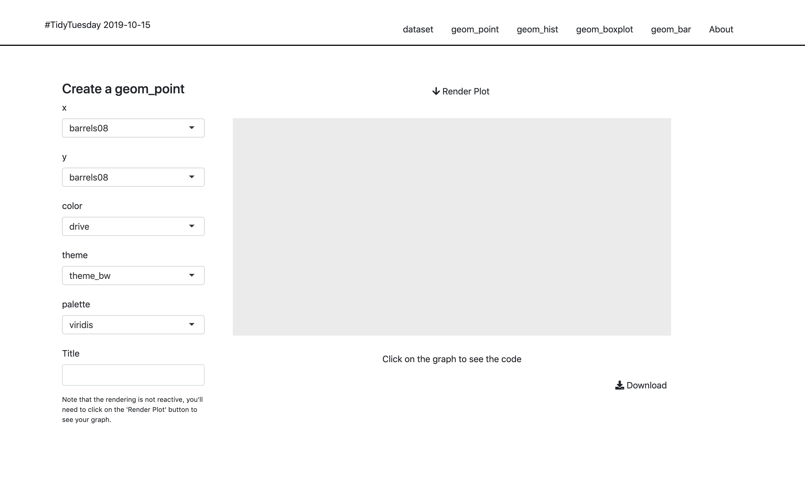

Chapter 6 UX Matters
-->We have a natural tendency, as R-coders, to be focused on the back-end, i.e the server part of the application.14 Which is perfectly normal—chances are you didn’t come to R to design front-ends.15 But let’s state the truth: no matter how complex and innovative your backend is, your application is bad if your User Experience (UX) is bad. That’s the hard truth. If people can’t understand how to use your application, your application isn’t successful, no matter how incredible the backend is. This natural taste for back-end / server logic can deserve you on the long run: by neglecting the UI and the UX, you’ll make your application less likely to be adopted among your users. Which is a good way to fail your application project.
6.1 Simplicity is Gold
// TODO
“Simplify, then add lightness”
Colin Chapman CBE, Founder of Lotus Cars
There are mainly two contexts where you’ll be building a web app with R: one for professional use (i.e people will rely on this app to do their job), or for fun (i.e people will just use the app as a distraction). But in both cases, people will want the app to be useable, and easily usable.
If people use your app in a professional context, they don’t want to fight with your interface, read complexe manuals, or lose time understanding what is supposed to do what in your application. In other words, they want an efficient tool: something that, beyond being accurate, is easy to grasp. In a professional context, when it comes to “Business applications”, the flatter the learning curve the better. Think about all the professional applications and softwares that you’ve been ranting about during your professional life, all these cranky user interfaces you haven’t understand and/or you need to relearn every time you use them. You don’t want your app to be one of these applications.
And on the other end, if users open your app for fun, they are not going to fight your app into submission: they are just going to give up if it’s too complex to be used.
Aiming for simplicity is a hard thing, but following some rules will help you start on a solid ground. In this section, we’ll review two general principals: the “don’t make me think” principle, which states that interfaces should be as self-explanatory as possible, and the “Rule of least surprise”, stating that elements should behave the way they are commonly expected to behave. These two rules aim at solving one issue when using an application: the bigger the cognitive load, the harder it is to use your app, and of course, the less a success your project will be.
6.1.1 How we read the web: scanning content and cognitive load
- Concept of satisfication : https://en.wikipedia.org/wiki/Satisficing, https://uk.sagepub.com/sites/default/files/upm-binaries/25239_Chater~Vol_1~Ch_03.pdf
And as a rule, people don’t like to puzzle over how to do things. They enjoy puzzles in their place—when they want to be entertained or diverted or challenged—but not when they’re trying to find out what time their dry cleaner closes.
6.1.2 Make a self-evident app (or at least self-explanatory)
self-evident : “Not needing to be demonstrated or explained; obvious.” lexico.com
self-explanatory : “Easily understood; not needing explanation.” https://www.lexico.com/en/definition/self_explanatory
What’s the difference between the two? Let’s for example get back to our {tidytuesday201942} application.
By itself, this application is not self-evident: you need to have a series of background information before understanding what this application was designed for.
For example, you might need to have a vague sense of what tidytuesday is.
If you don’t, you’ll have to read the home text, which will help you understand what this is.
Then, if we have a look at the menu, we see that these are a series of functions from {ggplot2}: without any background about the package, you’ll have a hard time understanding what this app actually does.
6.1.2.1 Visual elements
Another good example of making things self-explanatory is to keep in mind that if something is clickable, it has to look clickable.
“As a user, I should never have to devote a millisecond of thought to whether things are clickable—or not”
A good example of this principle is the “Render” button from the {tidytuesday201942} application.
This app is built on top of Bootstrap 4, which has no CSS class for {shiny} action button16.
Result: without any further CSS, the buttons didn’t show clearly as buttons, making it harder to decipher they are actually buttons.
Compare this native design:

To the one with a little bit of CSS (which is the one online):

Yes, it’s subtle, yet the second version of the button is clearer to understand.
6.1.2.2 Progression
If there is a progression in your app, you should have designed a clear pattern of moving forward. It can be as simple as putting “Next” buttons on the bottom of each page: but if you need to bring your user from step 1 to step 7, you need to guide them through the whole process. And it has to be clear: a good way to do that is to hide step n + 1 content until step n is fully completed. Indeed, users tend to scan a page without reading it in detail, so if step 2 is available to click and see, there is a great chance that they’ll go there.
Try to hide content at n+1 that needs completeness of step n. That way, you are sure to guide your user along a less painful road of usability.
Another way to help this readabilty is to ensure some kind of linear logic through the app: step 1, data upload, step 2, data cleaning, step 3, data visualisation, step 4, exporting the report. And organise your application around this logic, from left to right / right to left, or from top to bottom.
6.1.2.3 Inputs and errors
You’re the one developing the app, so of course you’re conscious of all the inputs that are needed to complete a specific task. But your user might be new to the app, distracted while reading, they might not clearly undertand what they are doing… If an input is necessary, make it clear that it’s an input AND that it’s mandatory.
Also, be generous about errors: it’s rather frustrating for a user to see an app crash without any explanation about what went wrong. So, if something fails or behaves unexpectedly, error messages are a key feature to help your user get on the right track. And, at the same time, helping them correct themselves after an error is the best way to save you time answering angry emails ;)
// TODO
-> example of implementation (shiny::showNotification(), {shinyAlert}, custom)
6.1.3 “Rule of Least Surprise”
“Rule of Least Surprise” or “Principle of Least Astonishment.”
Rule of Least Surprise: In interface design, always do the least surprising thing.
Just imagine for a second if our “Download” button in the {tidytuesday201942} app didn’t actually download the graph you had generated.
Even more, imagine if this button didn’t download the graph but something else.
How would you feel about this experience?
- Example: underline text is commonly understood as a link
6.2 The danger of feature-creep
Optional complexity, on the other hand, is tied to some desirable feature. Optional complexity can be eliminated only by changing the project’s objectives.
6.2.1 Restrain reactivity
// TODO
As a designer, you think: they’ll select this, and when they release the slider, this will update automatically. In real life, people make mistakes using the app, so if everything reacts to their every moves, the experience using the app can be bad.
6.2.2 Too much interactivity
// TODO
Don’t make things interactive if there is no value in adding interactivity. Adding interactivity widgets (in most cases) means adding visual elements to your original content: in other words, you’re adding visual components that might distract the user from focusing on the content of the information.
Good rule: don’t add feature for the sake of adding a feature. Less is more.
Example: using DT::data.table() or plotly or dygraph when it’s not needed.
Maybe a parallel with 90/00 website design with a lot of visual noise vs minimalist modern design?
6.3 About Accessibility
// TODO
A user interface needs to be “ready to be consumed” by the broader audience possible. That means people with visual, mobility, or cognitive disabilities.
Web Accessibility is pretty standard concept in the web development world, and you can learn about this straight from the first chapter of learn.freecodecamp.org. -> Screen to speech technology : html semantic tags -> Mobility impairment, people w/ parkinson for example. Exemple of the text input & ENTER button. Making things keyboard friendly. -> ColorBlind, viridis
aka what happens in the server side of a Shiny App↩
Front-end are the visual parts of your application, the one your user interacts with, as opposed to the back-end, which is what is installed on the server, the part the end user doesn’t see. In shiny, front-end is what correspond to the UI, back-end to the server.↩
{shiny}is built on top of Bootstrap 3, and the action buttons are of classbtn-default, which was removed in Bootstrap 4.↩